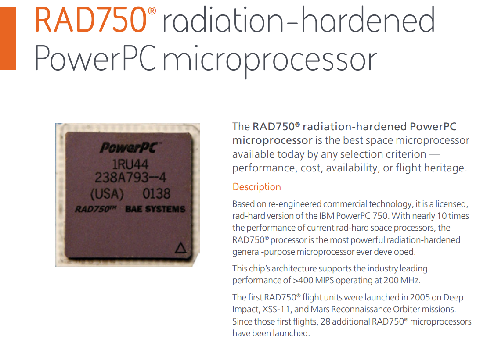
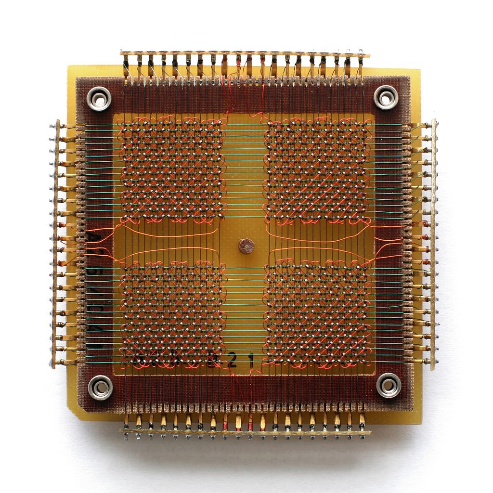
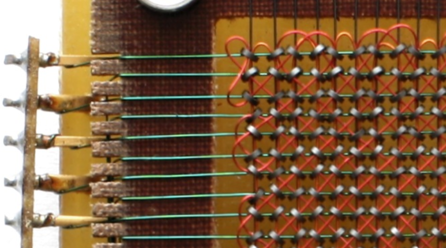
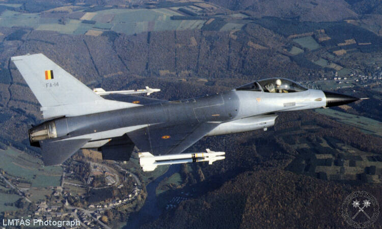
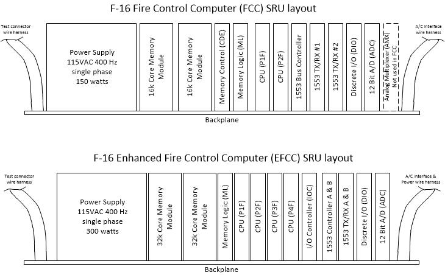
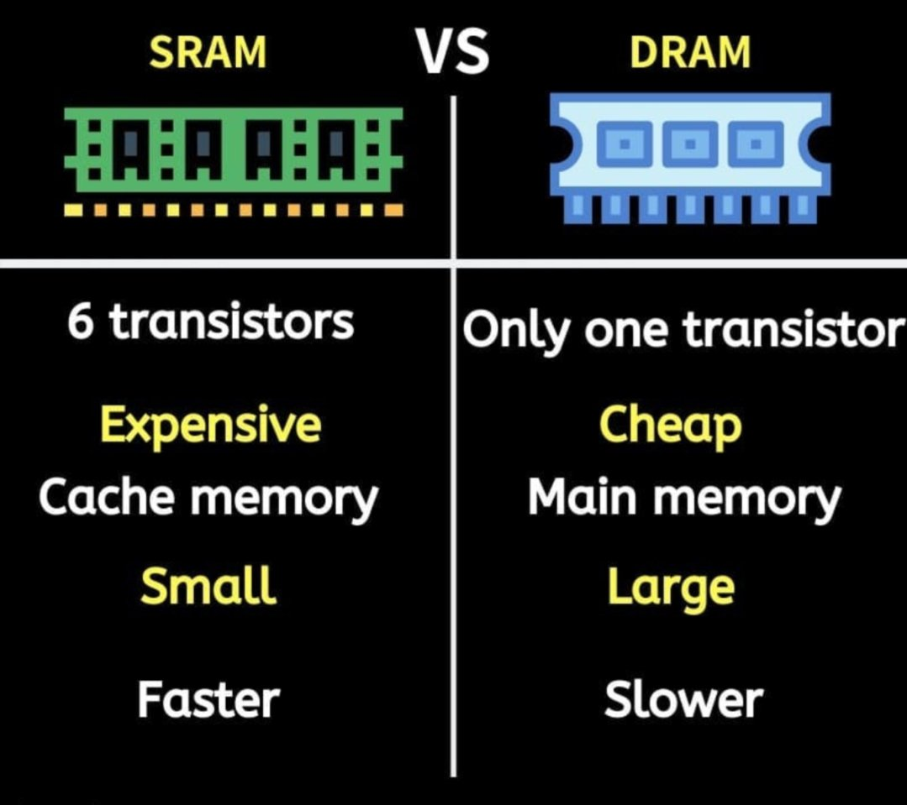
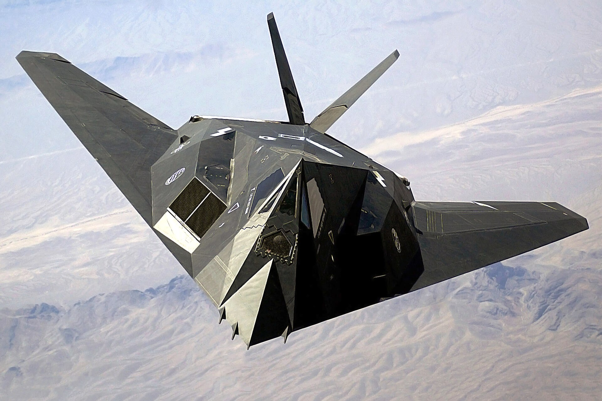

리튬 배터리를 극혐한 공군 장성들
게시: 2023-12-07T06:30:07+09:00
<왜 저런 저성능 프로세서를?>
James Webb 우주망원경에 사용되는 프로세서는 영국방산업체인 BAE가 IBM PowerPC 아키텍처 기반으로 만든 RAD750. 그렇게 으리으리한 우주탐사 장비에 들어가는 무척 비싼 프로세서니까 엄청난 고성능 제품일 것 같지만 clock speed는 고작 200MHz.

(제임스 웹 우주망원경 뿐만 아니라 화성 탐사 로봇차량인 rover에도 바로 이 processor가 사용되었음)
이처럼 군용 및 우주항공 분야의 전자장비는 민간에서 쓰는 것보다 훨씬 더 오래된 저사양 제품을 쓰는 것이 상식. 군용 장비 뿐만 아니라 민간용에서도 항전(avionics) 하드웨어는 성능이 아니라 확실한 안정성과 신뢰성이 더 중요하기 떄문. 게다가 어차피 정해진 시간 안에 정해진 계산값이 나오기만 하면 되니까 굳이 더 빠른 것을 쓸 이유도 없음.
<F-16에는 미국 장인들이 한땀한땀 정성으로 짠 메모리가 들어간다>
F-16의 최초 비행은 1974년, 미공군 도입은 1978년. 그러니까 거기에 들어가는 비행제어 컴퓨터나 화기관제 컴퓨터 등은 그보다 훨씬 이전에 나온 것을 썼다는 이야기. 그런데 메모리 반도체인 DRAM이 상용화된 것이 대충 1970년. 그러니까 절대 F-16의 컴퓨터에는 메모리 반도체가 사용되었을 리가 없음. 그럼 뭐가 사용됨? 아폴로 우주선을 달에 보낼 때 쓴 바로 그 메모리가 사용됨. 바로 magnetic core memory. 이건 환형(toroid)으로 만든 쬐~그만 ferrite 전자석에 구리선을 2~3개 끼워서 자수를 뜬 것 같은 형태의 메모리.

(128-byte짜리 core memory. 세로줄 가로줄을 세어보면 16줄씩 2단. (16+16)^2 = 1024-bit = 128-byte. )

( 128-byte짜리 core memory의 왼쪽 귀퉁이를 확대한 사진. 정말 손으로 한땀한땀 정성들여 땋은 메모리. 저 toroid 고리에 자성을 어느 바향으로 주느냐에 따라 1-bit의 정보를 저장할 수 있음.)
저 쬐그만 금속고리에 구리선을 (logic에 따라) 어떻게 꿰지? 놀랍게도 사람이 손으로 뀀. 진짜 미국 장인들이 한땀한땀 정성껏 꿴 수제 메모리.
실제로 F-16의 화기관제 컴퓨터인 M362F에는 32K-byte core 메모리 2개가 붙어 있었음. 초기 F-16은 아직 공대지 유도무기는 커녕 레이더 유도 공대공 미쓸인 AMRAAM도 달 수 없었으니 별로 많은 메모리가 필요하지 않았음. 그러나 그 다재다능함으로 인해 '하늘 위의 스위스 군대칼'이라는 별명을 얻게 되는 F-16에게는 곧 다양한 무장이 통합되었고, 그러니 32K-byte의 메모리는 턱없이 부족.

(초기 F-16A형. 콧잔등의 radome이 까만 색으로 칠해진 것이 특징인데, 정작 조종사들은 공중전 훈련을 해보니 저 까만 코가 파란 하늘에서 너무 눈에 잘 띄어 불리하다고 불평. 결국 다음부터는 회색으로 바뀜.)

( F-16의 화기관제 컴퓨터인 M362F의 얼개)
저 32K-byte 메모리 보드를 더 꽂으면 될 것 아닌가? 안 됨. Core memory는 그 물리적 특성 때문에 일단 덩치가 크고 무게도 무겁고 전기도 많이 먹음. 저 M362F 화기관제 컴퓨터에 core memory board를 더 꽂으려면 더 큰 공간이 필요했고, F-16 기체 설계가 새로 이루어져야 할 판국. 근데 당시엔 이미 SRAM DRAM 같은 메모리 반도체가 상용으로 많이 사용되고 있었음. 그러니 M362F 화기관제 컴퓨터의 설계 제조사였던 Delco Electronics사는 구닥다리 core memory 대신 반도체 메모리를 쓰자고 미공군에게 제안. 그러면 훨씬 작아지고 가벼워지고 전기도 적게 먹음.

(SRAM과 DRAM의 차이를 설명하는 표. 선량한 시민들은 물론이고 사실 대부분의 IT 종사자들도 이 기술적 차이를 이해할 필요는 없음. 그냥 SRAM이 더 비싸고 더 빠르며, 그래서 SRAM은 CPU의 cache에 사용되고, DRAM은 컴퓨터의 메인 메모리로 사용된다는 것만 기억하면 됨,)
그러나 미공군 장성들이 보기엔 심각한 문제가 있었음. Magnetic core memory는 본질적으로 non-volatile. 즉 전기가 꺼져도 메모리에 저장된 정보는 남음. 그에 비해 SRAM DRAM은 휘발성 메모리. 전기가 나가면 모든 정보가 다 날아감. 당연히 Delco Electronics사에게는 대안이 있었음. 리튬 배터리를 달아놓자는 것. 근데 원래 보수적인 애들은 장난감에 배터리 달려 있는 거 안 좋아함. 군장성들처럼 보수적인 애들이 없고, 당연히 걔들은 기껏 위험한 적진에 날아든 F-16이 쬐그만 리튬 배터리가 닳아서 미쓸 발사를 못하는 그런 개같은 상황을 절대 원치 않았음. 하지만 따로 대안이 없었던 Delco Electronics사는 부지런히 미공군을 설득. 생각해보면 배터리에 반대하는 것은 진짜 말이 안 됨. 어차피 전기가 끊겼다면 메모리에 정보가 남아있건 없건 그 전투기는 이미 망한 거임. 전기가 끊겼는데 컴퓨터가 제 역할을 하겠음? 결국 델코 일렉트로닉스는 리튬 배터리가 달린 SRAM 메모리로 M362F 화기관제 컴퓨터의 메모리를 업그레이드하는데 성공. ** 뒷이야기 저 M362F-2 computer를 만든 델코 일렉트로닉스는 결국 나중에 더 나은 항전 컴퓨터를 내놓은 Teledyne Systems에게 패배하여 F-16 사업을 상실. 원래 델코 일렉트로닉스는 자동차 부품 및 자동차용 라디오를 만들었던 회사로서 오하이오 기반의 회사였는데, WW1 이후 GM에게 인수되었음. 어쨌거나 오하이오 기반의 회사가 캘리포니아 기반의 텔레다인 시스템즈에게 패배했고 결국 복잡한 인수합병 과정을 거쳐 회사가 없어진 것은 뭔가 미국의 산업 구조 변화를 보여주는 사건. 그러나 그것이 M362F-2 computer의 끝은 아니었음. 나중에 만들어진 스텔스 폭격기 F-117에도 이 M362F-2 computer가 3대나 사용됨. 화기관제용은 아니었던 것 같고 뭔가 아무튼 숫자 계산용으로 사용되었다고. 그러나 몇년 뒤인 1983년, 이 3대의 컴퓨터는 IBM이 만든 신형 컴퓨터 1대로 곧 교체.

(F-117이 꽤 신형 폭격기 같지만 의외로 오래된 기체로서, 첫 비행이 1981년이고 1990년에는 이미 생산 중단.)
** 레이더 개발 이야기는 다음 주에 '미드웨이에서의 레이더'를 주제로 다시 연재됩니다.
Source : https://aviation.stackexchange.com/questions/52853/what-cpu-does-the-f-16-use https://www.f-16.net/f-16_versions_article3.html#google_vignette https://en.wikipedia.org/wiki/Lockheed_F-117_Nighthawk https://en.wikipedia.org/wiki/Magnetic-core_memory